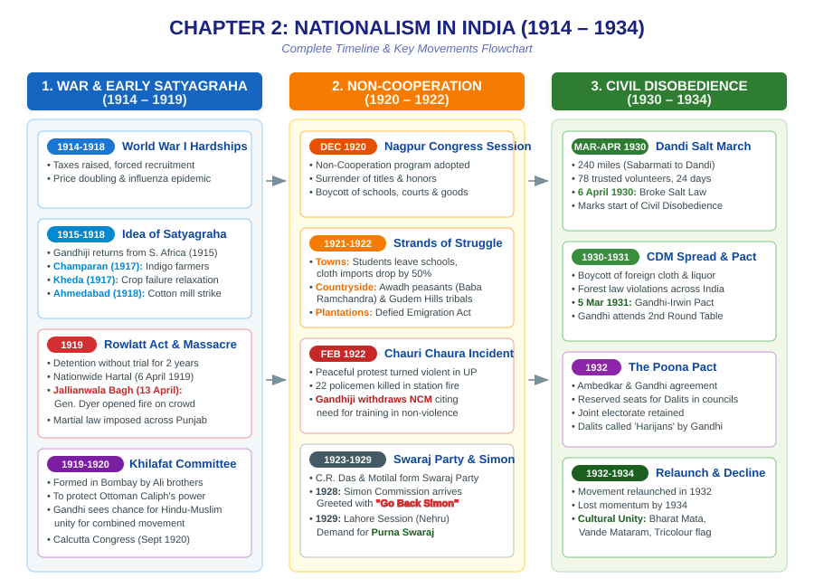

After 1919, the national movement spread to new areas and involved new social groups.
Mahatma Gandhi returned to India in Jan 1915 from South Africa, where he successfully fought racism with satyagraha.
Gandhi realised a broader movement was needed, requiring Hindu-Muslim unity.
Nationalism spreads when people believe they are part of the same nation. This happened through united anti-colonial struggles and cultural processes:
| Term | Definition |
|---|---|
| Satyagraha | A non-violent method of mass agitation emphasizing the power of truth and the need to search for truth. |
| Rowlatt Act | An oppressive act (1919) allowing the British to imprison political prisoners without trial for 2 years. |
| Begar | Forced labour that villagers were compelled to contribute without any payment. |
| Boycott | The refusal to deal and associate with people, or participate in activities, or buy and use things. |
| Picket | A form of demonstration or protest by which people block the entrance to a shop, factory, or office. |
| Purna Swaraj | Complete independence, formally demanded at the Lahore session of Congress in 1929. |